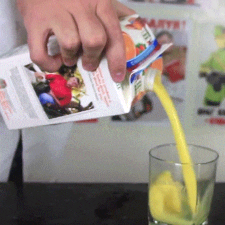
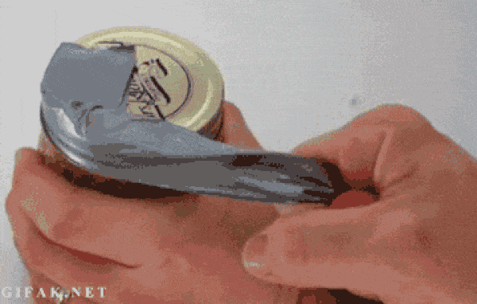

¿Por que es mejor servir el jugo con la boca hacia arriba?
Es algo que tiene que ver con el hecho de que los gases (de los que está compuesto el aire que respiramos) se desplazan siempre de zonas con más presión a zonas con menos presión. Esta es, por ejemplo, la razón por la que el aire se sale de una rueda pinchada (dentro hay más presión que fuera) o que, por ejemplo, se "arrugue" al descender esa botella de agua que llevábamos en el avión (a gran altura hay menos presión que en tierra).

Usa cinta adhesiva para abrir frascos difíciles de destapar
Vas a abrir un frasco de mermelada para dar el toque final a un postre y ¡oh, sorpresa! está tan bien cerrado que no te da la fuerza para desenroscar la tapa. En ese momento, el primer impulso después de pelearte con el dichoso frasco durante unos segundos es pasarle el marrón a otro, y pedir ayuda a tu padre, a tu novio o a tu compañera de piso que por alguna extraña razón digna de formar parte de las leyes de Murphy consiguen abrirlo sin dificultad y te sueltan eso de ¡pero si no estaba apretado!